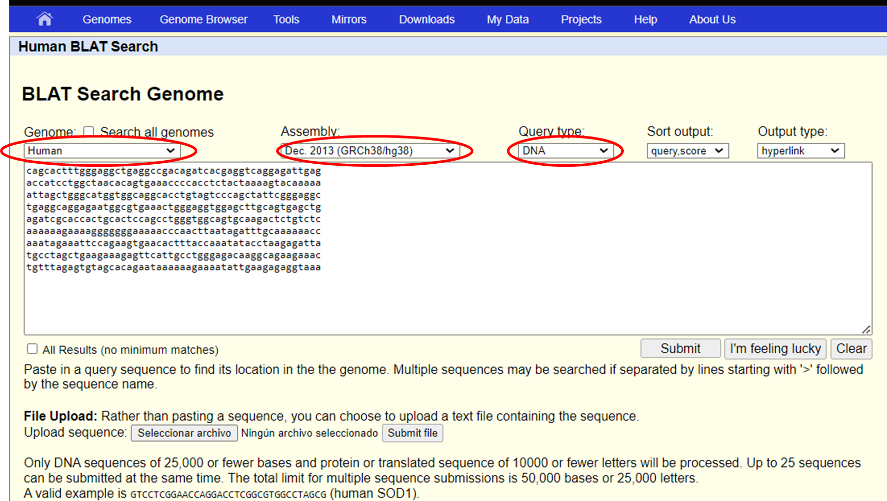

2 UCSC
The UCSC Genome Browser is a web-based tool, developed by the University of California Santa Cruz in 2000. It was initially created to support the assembly and annotation of the human genome as part of the Human Genome Project. Since then, it has evolved into a comprehensive resource for genomic data analysis. The browser stores and displays genomic sequences and annotations for various species, enabling researchers to access, search, retrieve, and analyze genetic data in a graphical format. This browser focuses on providing genome assemblies for extensively studied species such as humans, mice, and zebrafish. It offers detailed information on genome annotations for a select group of organisms, and has become an essential tool for genomics research worldwide.
BLAT (Blast - Like Aligment Tool)
BLAT (BLAST-Like Alignment Tool) is a fast alignment tool used to find the genomic location of either a DNA or protein sequence. In this example, we will use a fragment of DNA sequence from the BRAF gene.
cagcactttgggaggctgaggccgacagatcacgaggtcaggagattgag
accatcctggctaacacagtgaaaccccacctctactaaaagtacaaaaa
attagctgggcatggtggcaggcacctgtagtcccagctattcgggaggc
tgaggcaggagaatggcgtgaaactgggaggtggagcttgcagtgagctg
agatcgcaccactgcactccagcctgggtggcagtgcaagactctgtctc
aaaaaagaaaagggggggaaaaacccaacttaatagatttgcaaaaaacc
aaatagaaattccagaagtgaacactttaccaaatatacctaagagatta
tgcctagctgaagaaagagttcattgcctgggagacaaggcagaagaaac
tgtttagagtgtagcacagaataaaaaagaaaatattgaagagaggtaaa
Access BLAT by clicking on the Tools section
Enter your sequence in the BLAT search text box
Select the genome species and version (assembly) you want to align with, and the type of sequence, in this case DNA, and Submit your query

As a result, we obtain a list of matches, ordered in descending order by identity percentage. We can see a link in the “Action” column that redirects the page to the genome browser position of the matched sequence. Additionally, the sequence coordinates are displayed as chromosome, strand, sequence start, and end.
A list of results that align with our query sequence will then appear.
Table Browser
Accessible in the Tools tab, enables users to retrieve data from UCSC in tabular format. The Table Browser offers a flexible interface for querying and downloading specific genomic datasets.
Key features of the Table Browser include:
Customizable queries: Users can select specific genomic regions, genes, or entire chromosomes.
Multiple output formats: Data can be exported in various formats such as BED, GTF, or custom formats.
Filtering options: Apply filters to refine your search based on various criteria.
Intersection and correlation: Compare data from different tracks or tables.
In this example, we are going to retrieve all the exons of the BRAF gene from the Human genome assembly hg38. This demonstrates how the Table Browser can be used to extract specific genomic features for further analysis.
As shown on the image:
Fill the “Select dataset” fields for the human genome assembly hg38.
Select “Genes and Gene predictions” in the group field, “Gencode V48” in the track field, and “knownGene” in the table field.
In Region select position and write down “BRAF”, then click on “Lookup”, and you will be redirect to another windows to select the coordinates found for the BRAF gene.,
and after the text in the box will be replace for the gene coordinates. - Select “GTF - gene transfer format” in the output format field and write down a name for the output filename. - Click on “get output” to download the file with the exons of the BRAF gene in GTF format.
Liftover
This tool converts genomic coordinates and annotations between different versions of a reference genome assembly. It is particularly useful when working with data from different sources or when updating analyses to newer genome versions.
To use the Liftover tool:
Access the Liftover tool from the Tools tab.
Select your original genome specie and assembly, and the target genome assembly you want to convert to (new genome).
Type your genomic coordinates in the text box or upload a file in BED format if a large number of coordinates need to be converted.
Submit your request.
The tool will return the lifted-over coordinates, allowing you to seamlessly transition between different genome versions.